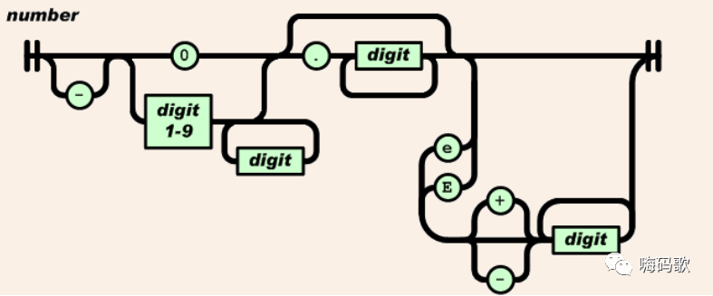

根据国际标准 IEEE 754，64 位浮点数格式的 64 个二进制位中，第0 位到第 51 位储存有效数字部分，第 52 到第 62 位储存指数部分，第 63 位是符号位，0 表示正数，1 表示负数。

（图片：海码歌）
1)、 JavaScript 内部，所有数字都是以 64 位浮点数形式储存，即使整数也是如此。所以，1 与 1.0 是相等的，而且 1 加上 1.0 得到的还是一个整数， 自己会推导类型,不会像 JAVA 那样变成小数。
2)、尽可能不要使用小数比较,小数不精确
1 === 1.0 // true
1 + 1.0 // 2
0.1 + 0.2 === 0.3//false
整数二进制是除以 2 求余数 即 8421 码 ，小数:整数与小数部分分开，乘以 2，分数计数法。
5:
5*2=1 余 1
1/2=0 余 1
1
-->倒写 :101
0.3:
0.3*2=0.6
0.6*2=1.2
0.2*2=0.4
0.4*2=0.8
0.8*2=1.6
0.6*2=1.2….
基本：1.2 科学计数法: e 或 E
123e3 // 123000
123e-3 // 0.123
使用字面量（literal）时，JavaScript 对整数提供四种进制的表示方法：十进制、十六进制、八进制、 2 进制。
十进制：没有前导 0。
八进制：有前导 0，且只用到 0-7 的七个阿拉伯数字，如果是 8-9 则表示十进制的 8-9。
十六进制：有前缀 0x 或 0X，用到十个阿拉伯数字，以及 a-f 和 A-F12 个英文字母。
二进制：有前缀 0b 或 0B，只用到 0 和 1 两个阿拉伯数字。
15
0xf // 15
017 // 15
0b1111 //15
09//9 -->无效的 8 进制
NaN:表示“非数字”（Not a Number），主要出现在将字符串解析成数字出错的场合。
1) NaN 不等于任何值，包括它本身,因为它不是一个值
2) NaN 与任何数（包括它自己）的运算，得到的都是 NaN。
3) isNaN 方法可以用来判断一个值是否为 NaN。
abc-1 0 / 0 NaN === NaN // false NaN+1 isNaN(NaN) // true isNaN(123) // false Infinity:无穷大 1 / -0 // -Infinity 1 / +0 // Infinity //isFinite 方法判断，是否为正常值。 isFinite(Infinity) // false isFinite(-1) // true isFinite(true) // true isFinite(NaN) // false
parseInt('123') // 123
parseInt('123px') //常用 123
parseFloat("3.14"); //3.14
Number(null) // 0
'chrome'
"good"
"It's a long journey"
'chrome' +'is' +'very' +'good'
\0 代表没有内容的字符（\u0000）
\n 换行符（\u000A）
\t 制表符（\u0009）
\' 单引号（\u0027）
\" 双引号（\u0022）
Base64 是一种编码方法，可以将任意字符转成可打印字符。使用这种编码方法，主要不是为了加密，而是为了不出现特殊字符，简化程序的处理。
btoa()：字符串或二进制值转为 Base64 编码
atob()：Base64 编码转为原来的编码
var string = 'Hello World!';
btoa(string) // "SGVsbG8gV29ybGQh"
atob('SGVsbG8gV29ybGQh') // "Hello World!"
// 不适合中文，encodeURIComponent 中文必须先编码。
function b64Encode( str ) {
return btoa(unescape(encodeURIComponent( str )));
}
function b64Decode( str ) {
return decodeURIComponent(escape(atob( str )));
}
b64Encode('你好') // "5L2g5aW9"
b64Decode('5L2g5aW9') // "你好"
上海尚学堂java培训整理发布，更多请关注公众号 嗨码歌，谢谢